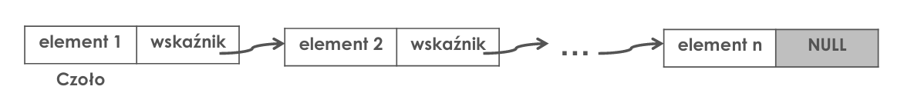
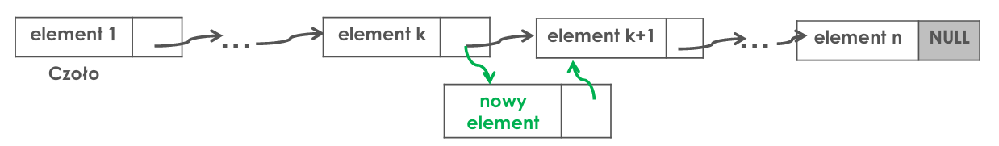
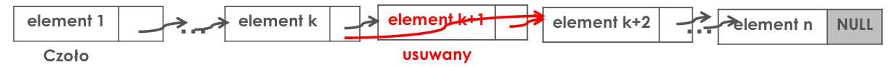
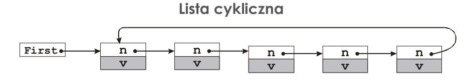

Opis krótki:
Lista – struktura danych służąca do reprezentacji zbiorów dynamicznych, w której elementy ułożone są w liniowym porządku.
Rozróżniane są dwa podstawowe rodzaje list: lista jednokierunkowa w której z każdego elementu możliwe jest przejście do jego następnika
oraz lista dwukierunkowa w której z każdego elementu możliwe jest przejście do jego poprzednika i następnika.
Opis szczegółowy:
Lista wskaźnikowa jest strukturą dynamiczną, co w praktyce oznacza możliwość jej uzupełniania o kolejne węzły „do kresu możliwości pamięci fizycznej”.

Mechanizm wskazywania, iż pewien węzeł jest ostatnim węzłem listy,
najczęściej wykorzystuje NULL (nil, UNKNOWN) jako umowną wartość wskaźnika do nieistniejącego następnika.
Wstawienie nowego elementu:
Mechanizm wskazywania, iż pewien węzeł jest ostatnim węzłem listy,
najczęściej wykorzystuje NULL (nil, UNKNOWN) jako umowną wartość wskaźnika do nieistniejącego następnika.
-
jeśli ma to nastąpić na początku listy, to wskaźnik
do następnika w nowym węźle ustawia się na dotychczasowy początek listy (czoło),
jednocześnie modyfikując informację o lokalizacji nowego czoła listy;
-
jeśli ma to nastąpić na końcu listy, to wskaźnik w obiekcie ostatnim ustawia się na nowy element składowy (węzeł);
-
jeśli ma to nastąpić wewnątrz listy, to wskaźnik ustawia się na następnik elementu,
przed którym ma być wstawiany, zaś wskaźnik poprzednika przestawia się na ten nowy węzeł.

do następnika w nowym węźle ustawia się na dotychczasowy początek listy (czoło),
jednocześnie modyfikując informację o lokalizacji nowego czoła listy;
przed którym ma być wstawiany, zaś wskaźnik poprzednika przestawia się na ten nowy węzeł.
Usunięcie elementu (o wskazanym kluczu):
-
najpierw trzeba go odnaleźć, przemieszczając się od czoła listy kierunku jej końca, a jeśli wyszukiwanie zakończy się sukcesem to:
-
jeśli jest to pierwszy węzeł listy (czoło), to należy zmodyfikować informację o lokalizacji nowego czoła listy;
-
jeśli ma to nastąpić na końcu listy, to wskaźnik w przedostatnim (jeśli usuwany węzeł nie jest jedynym) ustawia się na NULL;
-
jeśli ma to nastąpić wewnątrz listy, to należy przechować tymczasowo wskaźnik do usuwanego elementu (aby nie "zgubić" jego adresu),
a następnie wskaźnik wiążący poprzednika ustawić na następnik usuwanego elementu.

a następnie wskaźnik wiążący poprzednika ustawić na następnik usuwanego elementu.
Lista cykliczna – następnikiem ostatniego elementu jest pierwszy element. Po liście można więc przemieszczać się cyklicznie. Nie ma w takiej liście charakterystycznego ogona (ani głowy), często rozpoznawalnego po tym, że jego następnik jest pusty (NULL).
